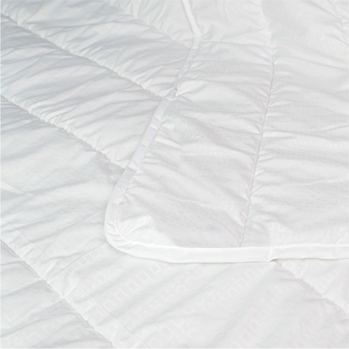

-

Чохол з білої мікрофібри
Міцна тканина, яка не тільки приємна на дотик, але й має терморегулюючі властивості, що допомагають уникнути статичної напруги.
-

Хлопкопон
Силіконізоване волокно з щільністю 200 г/м2. Цей наповнювач забезпечує м’якість і комфорт під час сну. Хлопкопон — це сучасний матеріал зі штучних волокон, який має високу еластичність і зберігає свою форму впродовж довгого періоду часу. Крім того, він забезпечує оптимальну циркуляцію повітря, що сприяє комфортній температурі під час сну.
-

Ковдра стьобана
Ковдра має стьобану лініями поверхню з малюнком тиснявою “прямокутник”, що не лише зберігає форму виробу, але й надає йому привабливий зовнішній вигляд.
-
Оздоблена білим кантом Тік (коса бейка)
Це надає ковдрі привабливий зовнішній вигляд.